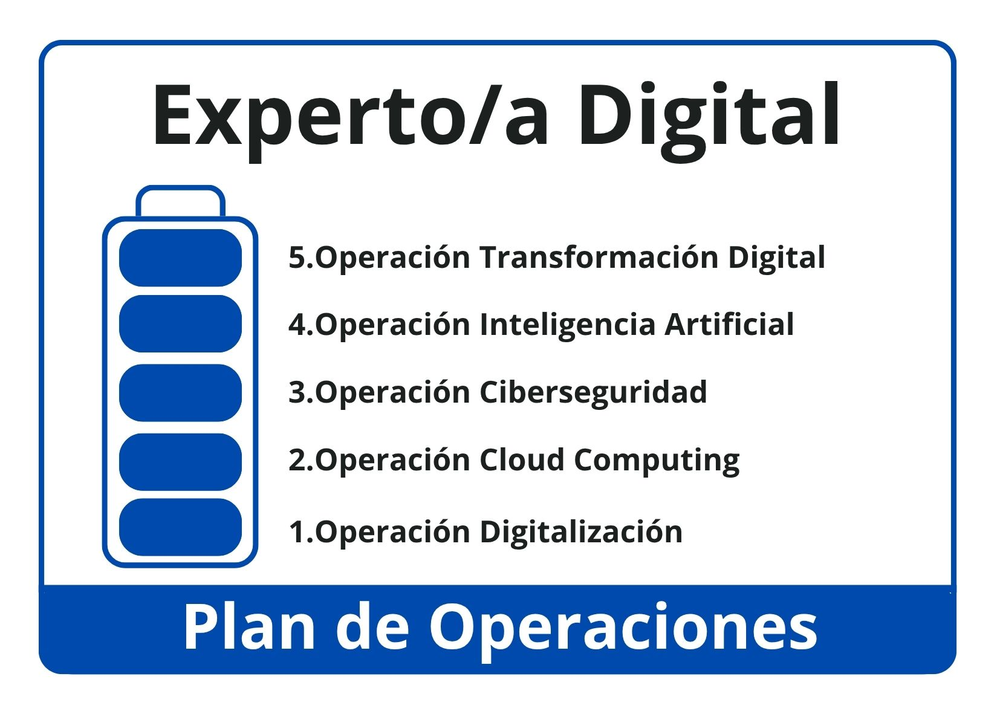

2
Para visualizar la información situaremos el ratón sobre las áreas o iconos activos de la imagen.
{"typeGame":"Mapa","instructions":"","showMinimize":false,"showActiveAreas":false,"author":"","url":"resources/Guion_operaciones_(2).jpg","authorImage":"","altImage":"","itinerary":{"showClue":false,"clueGame":"","percentageClue":40,"showCodeAccess":false,"codeAccess":"","messageCodeAccess":""},"points":[{"id":"p1616267784036","title":"Operació Digitalització","type":2,"url":"","video":"","x":0.7181757108183079,"y":0.7493780339805826,"x1":0,"y1":0,"footer":"","author":"","alt":"","iVideo":0,"fVideo":0,"eText":"","iconType":20,"question":"","question_audio":"","toolTip":"","link":"","map":{"id":"a1616267784036","pts":[{"id":"p1453076808060","title":"","type":0,"url":"","video":"","x":0,"y":0,"x1":0,"y1":0,"footer":"","author":"","alt":"","iVideo":0,"fVideo":0,"eText":"","iconType":0,"question":"","question_audio":"","toolTip":"","link":"","color":"#000000","fontSize":"14","map":{"id":"a1453076808060","url":"","alt":"","author":"","pts":[]},"slides":[{"id":"s1453076808060","title":"","url":"","author":"","alt":"","footer":""}],"activeSlide":0}],"url":"","alt":"","author":"","active":0},"slides":[{"id":"s1616267784036","title":"","url":"","author":"","alt":"","footer":""}],"activeSlide":0,"audio":"","color":"#000000","fontSize":"14"},{"id":"p1141842049734","title":"Operación Cloud Computing","type":2,"url":"","video":"","x":0.7750411754507628,"y":0.6464654126213593,"x1":0,"y1":0,"footer":"","author":"","alt":"","iVideo":0,"fVideo":0,"eText":"","iconType":20,"question":"","question_audio":"","toolTip":"","link":"","map":{"id":"a1141842049734","pts":[{"id":"p1180315598001","title":"","type":0,"url":"","video":"","x":0,"y":0,"x1":0,"y1":0,"footer":"","author":"","alt":"","iVideo":0,"fVideo":0,"eText":"","iconType":0,"question":"","question_audio":"","toolTip":"","link":"","color":"#000000","fontSize":"14","map":{"id":"a1180315598001","url":"","alt":"","author":"","pts":[]},"slides":[{"id":"s1180315598001","title":"","url":"","author":"","alt":"","footer":""}],"activeSlide":0}],"url":"","alt":"","author":"","active":0},"slides":[{"id":"s1141842049734","title":"","url":"","author":"","alt":"","footer":""}],"activeSlide":0,"audio":"","color":"#000000","fontSize":"14"},{"id":"p16573126322","title":"Operación Ciberseguridad","type":2,"url":"","video":"","x":0.748688886962552,"y":0.547436286407767,"x1":0,"y1":0,"footer":"","author":"","alt":"","iVideo":0,"fVideo":0,"eText":"","iconType":20,"question":"","question_audio":"","toolTip":"","link":"","map":{"id":"a16573126322","pts":[{"id":"p1391618934697","title":"","type":0,"url":"","video":"","x":0,"y":0,"x1":0,"y1":0,"footer":"","author":"","alt":"","iVideo":0,"fVideo":0,"eText":"","iconType":0,"question":"","question_audio":"","toolTip":"","link":"","color":"#000000","fontSize":"14","map":{"id":"a1391618934697","url":"","alt":"","author":"","pts":[]},"slides":[{"id":"s1391618934697","title":"","url":"","author":"","alt":"","footer":""}],"activeSlide":0}],"url":"","alt":"","author":"","active":0},"slides":[{"id":"s16573126322","title":"","url":"","author":"","alt":"","footer":""}],"activeSlide":0,"audio":"","color":"#000000","fontSize":"14"},{"id":"p645559051804","title":"Operación Inteligencia Artificial","type":2,"url":"","video":"","x":0.83468056518724,"y":0.45423240291262135,"x1":0,"y1":0,"footer":"","author":"","alt":"","iVideo":0,"fVideo":0,"eText":"","iconType":20,"question":"","question_audio":"","toolTip":"","link":"","map":{"id":"a645559051804","pts":[{"id":"p665940375084","title":"","type":0,"url":"","video":"","x":0,"y":0,"x1":0,"y1":0,"footer":"","author":"","alt":"","iVideo":0,"fVideo":0,"eText":"","iconType":0,"question":"","question_audio":"","toolTip":"","link":"","color":"#000000","fontSize":"14","map":{"id":"a665940375084","url":"","alt":"","author":"","pts":[]},"slides":[{"id":"s665940375084","title":"","url":"","author":"","alt":"","footer":""}],"activeSlide":0}],"url":"","alt":"","author":"","active":0},"slides":[{"id":"s645559051804","title":"","url":"","author":"","alt":"","footer":""}],"activeSlide":0,"audio":"","color":"#000000","fontSize":"14"},{"id":"p307093403277","title":"Operación Transformación Digital","type":2,"url":"","video":"","x":0.8651937413314841,"y":0.34937803398058254,"x1":0,"y1":0,"footer":"","author":"","alt":"","iVideo":0,"fVideo":0,"eText":"","iconType":20,"question":"","question_audio":"","toolTip":"","link":"","color":"#000000","fontSize":"14","map":{"id":"a307093403277","pts":[{"id":"p54343761865","title":"","type":0,"url":"","video":"","x":0,"y":0,"x1":0,"y1":0,"footer":"","author":"","alt":"","iVideo":0,"fVideo":0,"eText":"","iconType":0,"question":"","question_audio":"","toolTip":"","link":"","color":"#000000","fontSize":"14","map":{"id":"a54343761865","url":"","alt":"","author":"","pts":[]},"slides":[{"id":"s54343761865","title":"","url":"","author":"","alt":"","footer":""}],"activeSlide":0}],"url":"","alt":"","author":"","active":0},"slides":[{"id":"s307093403277","title":"","url":"","author":"","alt":"","footer":""}],"activeSlide":0,"audio":""}],"isScorm":0,"textButtonScorm":"Save score","repeatActivity":false,"textAfter":"","evaluation":0,"selectsGame":[{"typeSelect":0,"numberOptions":4,"quextion":"","options":["","","",""],"solution":"","solutionWord":"","percentageShow":35,"msgError":"","msgHit":""}],"isNavigable":true,"showSolution":true,"timeShowSolution":3,"version":2,"percentajeIdentify":100,"percentajeShowQ":100,"percentajeQuestions":100,"autoShow":true,"autoAudio":true,"optionsNumber":0,"evaluationF":false,"evaluationIDF":"","id":"2024418163527-120","order":"","msgs":{"msgSubmit":"Enviar","msgIndicateWord":"Proporcione una palabra o expresión","msgClue":"¡Genial! La pista es:","msgErrors":"Errores","msgHits":"Aciertos","msgScore":"Puntuación","msgMinimize":"Minimizar","msgMaximize":"Maximizar","msgFullScreen":"Pantalla Completa","msgNoImage":"Pregunta sin imágenes","msgSuccesses":"¡Correcto! | ¡Excelente! | ¡Genial! | ¡Muy bien! | ¡Perfecto!","msgFailures":"¡No era eso! | ¡Incorrecto! | ¡No es correcto! | ¡Lo sentimos! | ¡Error!","msgTryAgain":"Necesita al menos un %s% de respuestas correctas para conseguir la información. Vuelva a intentarlo.","msgEndGameScore":"Antes de guardar la puntuación comience la partida.","msgScoreScorm":"La puntuación no se puede guardar porque esta página no forma parte de un paquete SCORM.","msgPoint":"Punto","msgAnswer":"Responder","msgOnlySaveScore":"¡Sólo puede guardar la puntuación una vez!","msgOnlySave":"Sólo puede guardar una vez","msgInformation":"Información","msgYouScore":"Su puntuación","msgOnlySaveAuto":"Su puntuación se guardará después de cada pregunta. Sólo puede jugar una vez.","msgSaveAuto":"Su puntuación se guardará automáticamente después de cada pregunta.","msgSeveralScore":"Puede guardar la puntuación tantas veces como quiera","msgYouLastScore":"La última puntuación guardada es","msgActityComply":"Ya ha realizado esta actividad.","msgPlaySeveralTimes":"Puede realizar esta actividad cuantas veces quiera","msgClose":"Cerrar","msgPoints":"puntos","msgPointsA":"Puntos","msgQuestions":"Preguntas","msgAudio":"Audio","msgAccept":"Aceptar","msgYes":"Sí","msgNo":"No","msgShowAreas":"Mostrar áreas activas","msgShowTest":"Mostrar cuestionario","msgGoActivity":"Pulsa aquí para realizar esta actividad","msgSelectAnswers":"Selecciona las opciones correctas y pulsa sobre el botón 'Responder'.","msgCheksOptions":"Marca todas las opciones en el orden adecuado y pulsa sobre el botón 'Responder'.","msgWriteAnswer":"Escribe la palabra o expresión correcta y pulsa en el botón 'Responder'.","msgIdentify":"Identifica","msgSearch":"Buscar","msgClickOn":"Pulsa sobre","msgReviewContents":"Debes repasar el %s% de los contenidos de la actividad antes de completar el cuestionario.","msgScore10":"¡Todo perfecto! ¡Enhorabuena! ¿Deseas repetir esta actividad?","msgScore4":"No has superado esta prueba. Repasa sus contenidos e inténtalo de nuevo. ¿Deseas repetir la actividad?","msgScore6":"¡Estupendo! Has superado la prueba, pero seguro que lo puedes mejorar. ¿Deseas repetir esta actividad?","msgScore8":"¡Casi perfecto! Aún lo puedes hacer mejor. ¿Deseas repetir esta actividad?","msgNotCorrect":"¡No es correcto! Has pulsado sobre","msgNotCorrect1":"¡No es correcto! Has pulsado sobre","msgNotCorrect2":"y la respuesta correcta es","msgNotCorrect3":"¡Prueba otra vez!","msgAllVisited":"¡Genial! Has visitado los puntos necesarios.","msgCompleteTest":"Puedes completar el cuestionario.","msgPlayStart":"Pulse aquí para empezar","msgSubtitles":"Subtítulos","msgSelectSubtitles":"Selecciona un archivo de subtítulos. Formatos válidos:","msgNumQuestions":"Número de preguntas","msgHome":"Inicio","msgReturn":"Volver","msgCheck":"Comprobar","msgUncompletedActivity":"Actividad no completada","msgSuccessfulActivity":"Actividad superada. Puntuación: %s","msgUnsuccessfulActivity":"Actividad no superada. Puntuación: %s","msgTypeGame":"Mapa"}}

Operació Digitalització : En esta operación vamos a trabajar los diferentes entornos en los que nuestras empresas pueden realizar el proceso de digitalización, para después conocer las tecnologías habilitadores digitales que permitirán implementarla y por último centrarnos en una de ellas que se encuentra actualmente en pleno auge como es Internet de las cosas (IoT).
Operación Cloud Computing: En esta operación, vamos a identificar y entender los distintos niveles y funciones de la computación en la nube (cloud), incluyendo conceptos como edge, fog y mist computing. Veremos cómo el cloud computing permite el trabajo colaborativo, el almacenamiento de datos y la ejecución de aplicaciones, y cómo estos sistemas se integran en entornos digitales conectados.
Operación Ciberseguridad: En esta operación analizaremos la importancia de proteger nuestros datos por lo que aprenderemos mecanismos de protección y valoraremos la importancia de desarrollar una cultura en ciberseguridad en nuestra empresa para llevar a cabo lo que se conoce como el Plan Director de Seguridad.
Operación Inteligencia Artificial: En esta operación trabajaremos la aplicación de la Inteligencia Artificial (IA) en los procesos productivos y de negocio, su relación con el Big Data y la minería de datos. Se abordará cómo la IA mejora la toma de decisiones, la automatización de procesos y la rentabilidad empresarial.
Operación Proyecto de Transformación Digital: En esta operación se aplica todo lo aprendido en los recursos anteriores en un proyecto final. Diseñaremos un plan de transformación digital para una empresa del sector del ciclo formativo. Se identificarán las áreas a digitalizar, tecnologías aplicables, costes, beneficios y cronograma. Este proyecto culmina con un lienzo estratégico que integra tanto los aspectos tecnológicos como humanos del cambio digital.
Your browser is not compatible with this tool.